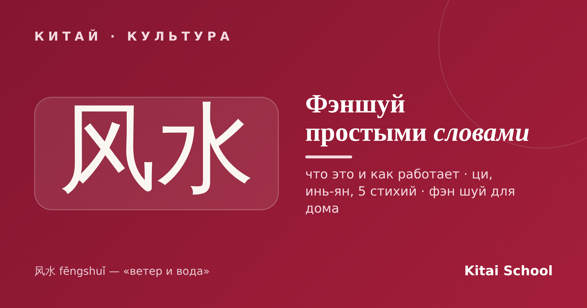
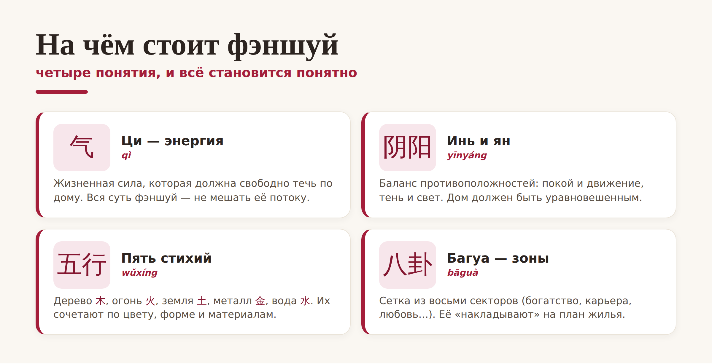
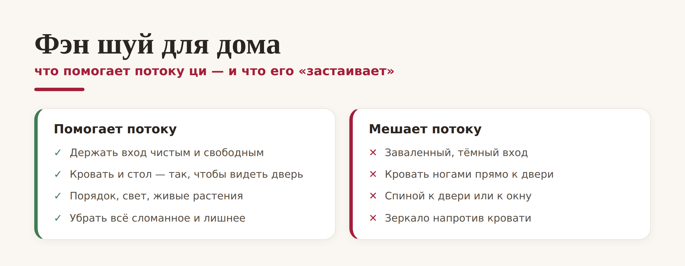

Китай · культура

Слово «фэншуй» слышали все, но что это на самом деле — знают немногие. Кто-то думает, что это про переставить диван ради денег, кто-то — что это эзотерика. На деле 风水 (fēngshuǐ) переводится как «ветер и вода» и означает древнее искусство гармонично организовать пространство. Разберём основы фэншуй простыми словами.
Если объяснять фэншуй простыми словами: это система о том, как расставить вещи и обустроить дом, чтобы в нём было приятно и «легко дышалось». В основе всего лежит идея ци (气) — жизненной энергии, которая должна свободно течь по помещению. Задача фэншуй — не мешать этому потоку. Вот, собственно, и весь ответ на вопрос «фэншуй что это»: искусство впустить в дом хорошую энергию и не запирать её.
Чтобы понять основы фэншуй, достаточно четырёх понятий. Они и складываются в целую систему:

Коротко: ци — энергия, которая течёт; инь и ян (阴阳) — баланс покоя и движения; пять стихий (五行 — дерево, огонь, земля, металл, вода) сочетают через цвета, формы и материалы; а багуа (八卦) — это сетка из восьми зон (богатство, карьера, любовь, здоровье и другие), которую мысленно «накладывают» на план жилья, чтобы понять, за что отвечает каждый угол.
Самое интересное — практика. Хорошая новость: чтобы применить фэн шуй для дома, не нужны амулеты и ремонт. Достаточно здравого смысла, за которым, если приглядеться, и стоит вся мудрость.

Главные правила простые. Держите вход чистым и свободным — по фэншуй именно через дверь (门, «рот ци») энергия входит в дом. Ставьте кровать и рабочий стол так, чтобы видеть дверь, но не лежать ногами прямо к ней. Убирайте хлам, чините сломанное, добавляйте света и живых растений. Заметьте: всё это просто делает дом уютнее — и в этом весь секрет.
Честно: фэншуй — это традиция и часть культуры, а не доказанная наука. Не ждите, что перестановка шкафа принесёт миллион. Но рациональное зерно в нём есть: порядок, свет, воздух и продуманная расстановка мебели действительно влияют на самочувствие и настроение. Так что относиться к фэншуй лучше без фанатизма — как к красивому способу навести гармонию дома.
С чего начать. Не переделывайте всё сразу. Начните с одного: разберите завалы у входной двери и на рабочем столе. Даже это небольшое изменение по фэншуй сразу делает пространство «легче» — а заодно это отличный повод узнать о Китае чуть больше.
Вот и весь ответ на вопрос, фэншуй что это: свободный поток ци, баланс инь-ян, пять стихий и зоны багуа — если объяснять простыми словами. Без мистики, зато с вниманием к своему дому. Попробуйте — и, возможно, вам действительно станет уютнее.
Гармонии вашему дому! 风生水起。